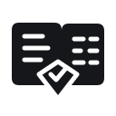

方向 0101 / 03
引证页签
CITATION / EDITORIAL
从文档页与重点摘录出发，加入一个小型核验记号。最容易让人联想到“答案有出处”。
32 px16 px清楚 / 直接
当前折面版保留，不在概念阶段覆盖。下面比较三种更有“依据、来源、核验”联想的构形，
先选方向，再做品牌配色、单色版、反白版与功能图标适配。
从文档页与重点摘录出发，加入一个小型核验记号。最容易让人联想到“答案有出处”。

两份来源在中心汇合成核验结果，最贴近项目“结构化数据 + 文档证据”的特色。
打开的书页与中间的核验线索结合，气质更亲和，强调知识问答与可信结论。